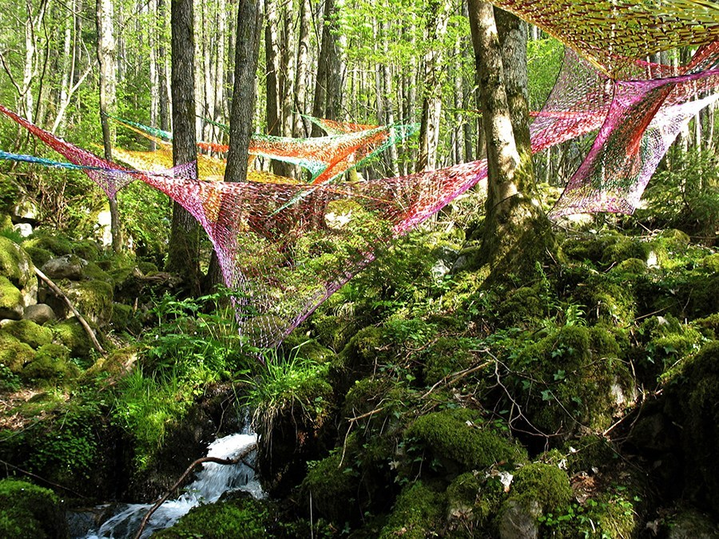

Site specific art pertains to art that is created for a certain place or area. This type of art is usually linked with environmental or outdoor art. The idea of art inventions is the artwork that interacts with previously existing art, audiences, places or circumstances. This can also be the art that enters a situation outside of the art world, attempting to change certain previous conditions. The idea of art intervention is sometimes viewed as lesser than regular art and vandalism.
Both of the artists' works go against what is seen to be in the traditional installation space. In the same way, both artists create spaces where the audience brings questions and contemplates on what the work is about. Walter De Maria’s artwork uses the whole space of the installation (regardless of it being inside or outside). Walter De Maria’s work wasn’t seen as a disturbance, but it brought questions about the work to those who encountered and experienced it. Banksy has done different works that are very public, and sometimes are seen as disturbances or not even art at all because of the execution of the work.
Some of the most common tactics that all ‘signs’ must share are that they have some kind of message, and catch a person’s eye. This can be in the form of text, images, or other shapes. In order for signs to be relevant, they have to be understood one way or another. They’re used as guides for locating things or places, as well as directing us in certain ways.
An artist that creates site specific work is Edith Meusnier. Most of her work consists of environmental art, using plastic ribbons (like what you would wrap birthday or christmas presents with) or other materials to question the relationship between humans and the environment. This piece was Entre-Deux done in 2006 in Valée de Munster, France.
